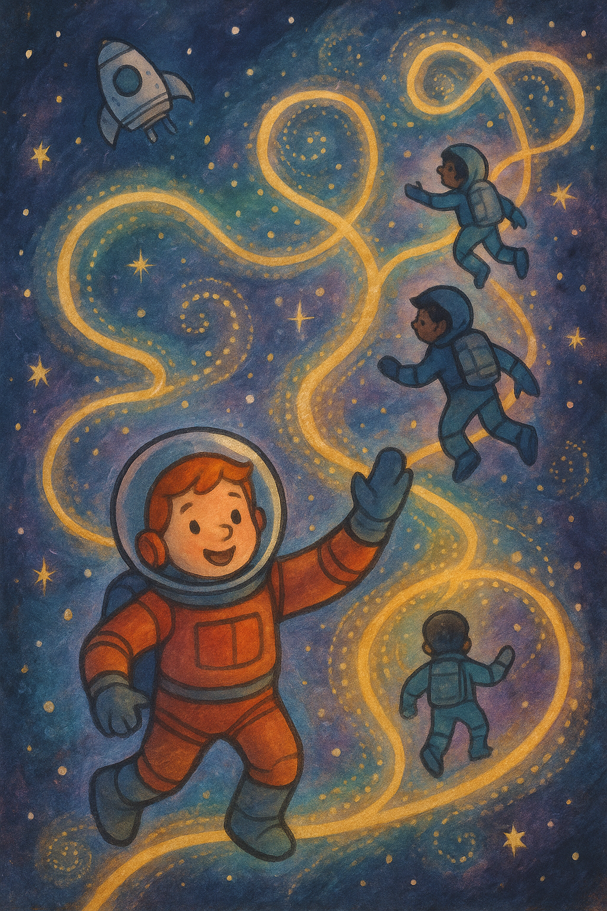
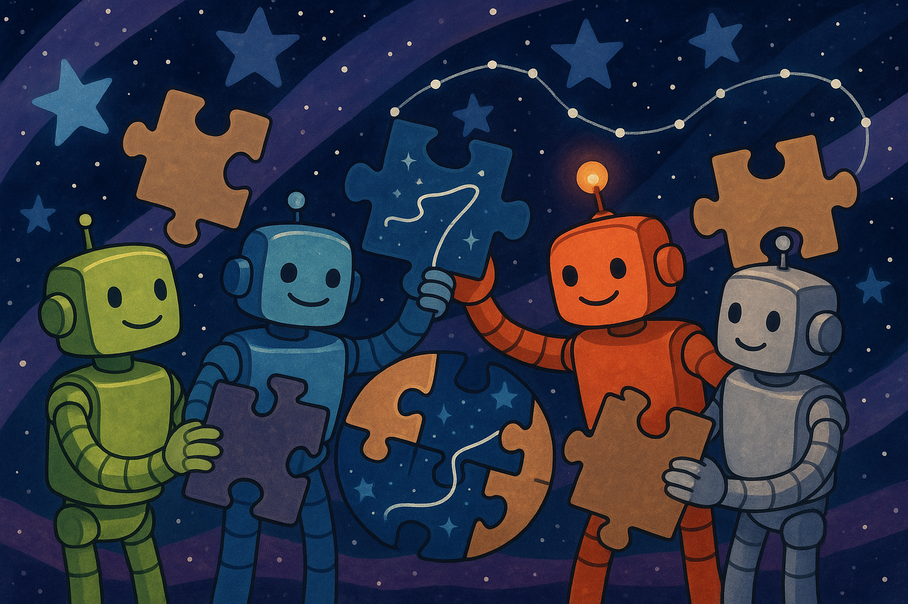

Пролог
После лабиринта «Искра» летела молча. Никто не говорил — но каждый думал об одном и том же. О пятой стихии. О Материосе.
— Если он существует, — сказал Ветрос, разглядывая звёзды за иллюминатором, — он может быть кем угодно. Машиной. Существом. Даже… планетой.
— Он не кем угодно, — возразил Террос, твёрдо, как всегда. — Он тем, что соединяет нас всех.
— А значит, — задумчиво добавил Аквас, — его следы — везде.
— Тогда начнём искать, — буркнул Драгос. — Только без философии.
Но философия пришла сама.
Первый след
Они нашли его на безымянном астероиде. Тонкая, почти невидимая нить энергии, похожая на застывший луч света. Она дрожала, когда «Искра» приближалась.
— Это похоже на… ткань, — сказал Аквас.
— На паутину, — уточнил Ветрос.
— На корни, — добавил Террос.
Драгос протянул руку — и почувствовал тепло. — Он здесь был.
Но нить исчезла, как только он её коснулся. Остался только намёк.
Второй след
Следующий — в заброшенном космическом храме. Там были статуи четырёх стихий — огонь, вода, ветер, земля — но посередине пустовал пьедестал.
— Пятый, — прошептал Аквас. — Всегда был пятый. Просто его забыли.
Они нашли осколки кристалла, излучавшего слабый свет. Но когда Драгос попытался взять его, кристалл распался на пыль.
— Он рассеян, — сказал Террос. — Буквально.
Выбор
Чтобы собрать Материоса, нужно было не просто искать. Нужно было отдавать.
Каждый из них отдал часть себя:
- Драгос — крошку своего пламени, которое никогда не гаснет.
- Ветрос — струю своего ветра, что несёт слова и запахи.
- Аквас — каплю своей воды, в которой отражается небо.
- Террос — песчинку своей земли, твёрдой и вечной.
Они вливали это в каждый найденный след, и тот начинал светиться чуть ярче.
— Почему именно жертва? — спросил Ветрос, когда усталость уже давила.
— Потому что Материя — это то, что соединяет, — ответил Аквас. — А соединяет только то, чем делятся.
Слабый голос
На последнем фрагменте, в глубине ледяной кометы, они услышали его. Не слова — дыхание. Тихое, хрупкое.
— …я… — прошептал голос, будто издалека. — …не знаю, кто я…
— Ты Материос, — сказал Террос. — Ты был всегда.
— …я… боюсь.
— Мы тоже, — ответил Аквас. — Но вместе страх не страшен.
Последствие
Материос ещё не появился — но его след стал ярким, как звезда. Теперь они знали, что он слышит их.
Когда «Искра» уходила с кометы, все чувствовали усталость. Но это была правильная усталость.
— Я отдал часть своего огня, — сказал Драгос. — Но мне не меньше, а больше.
Ветрос кивнул. — И мой ветер стал легче.
— Потому что, — сказал Аквас, — отдавая, мы получаем.
Террос добавил тихо, но уверенно: — И потому мы его найдём.

📜 Урок
Иногда, чтобы найти что‑то важное, нужно делиться своим. Даже если кажется, что потеряешь — на самом деле станешь сильнее.